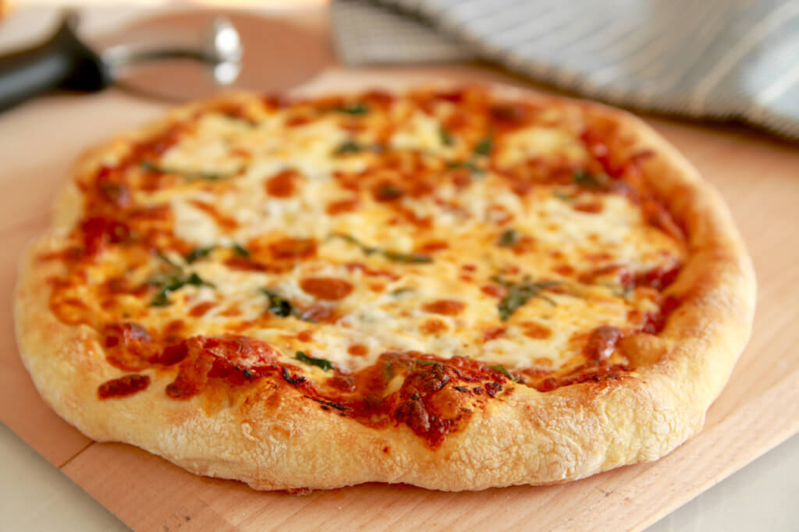

As far as favourite days of the year go, Pancake day is probably no.1 for me - am I right ?! Although I celebrate Pancake Day almost every 14 days, I always prepare something special for the NATIONAL Pancake day.
So I thought I’d give you a lil inspiration for the big day. Let me introduce you to the Banana Haven Pancakes! Thought they would become Pinterest epic fail, but it turned out pretty well and it wasn’t even hard.
I used a dozen of recipes f. e. from Jamie Oliver, Pinterest, BBC and I somehow mixed them all together and a masterpiece was created. I made the fluffiest american pancakes (without any sugar!) - soooo tasty! Basically what you have to do is to follow the original recipe and mix it like you want. - just kidding.
Here’s the recipe (one portion!):
2 eggs
150ml of milk
half of banana
baking powder
150g flour
To garnish them use some strawberries, raspberries or whateverberries you’d love to or you can use yoghurt, honey, maple syrup, walnuts - basically everything you find in your fridge
I would love to hear your feedback on them (“Contact” and write me a note!)! See you in the next post!
Hedgehog’s Pizza
As far as I am a huuuuuuuuge Pizza lover, I’ve decided to learn how to bake my own Pizza. It was a truthful coincidence (lol, not really), that my brother is currently dating an Italian lady and I asked directly her for the recipe (also I had a chance to talk with her Granny! - it’s their family recipe so keep it just between us (and the whole internet…)).
Pre-Prep: melt a cube (12g or so) of fresh yeast (if you don’t have the fresh one, use the dry one), in half a glass of warm water (between 35/40 degrees, not warmer nor colder). Put a teaspoon of sugar in the glass with the yeast, so that it ferments better. Mix it etc for something like 10 mins. Warm the oven at 50 degrees max. Once it’s warm enough, turn it off.
Prep (for one pizza): use half a kg of flour in a big bowl. Pour 2 glasses of water (not too full), two tablespoons of olive oil, and the water in which you melted the yeast on the flour, together with a pinch of salt. Mix with your hands the dough. At this moment you’ll see if you’ll need more water or more flour, depending on the consistency of the dough.
Once it’s like you want it, nice, homogeneous etc etc. you leave it in the bowl, cover it with a clean cloth, and put it in the warm, turned off oven.
Leave it there at least 30 mins, the more you leave it, the more it grows, the fluffier it gets. I leave it even 3 hours sometimes.
Never open the oven, never lift the cloth during this phase.
Once it waited long enough, you put baking paper on a big “oven pan”, put some olive oil on it and start spreading the dough on it. After, you put the tomato source, the mozzarella and everything you want on top. Bake at 180 degrees for 40 mins circa, however you need to check every once in a while to make sure it’s ready/it’s not burning.

Granny’s advice: instead of 2 glasses of normal water, you can try to use sparkling water, or even beer. This will make your dough even fluffier. Instead, if you want a softer dough, you boil 1 or 2 potatoes, mash then and add them to the dough.
ENJOYYY! (Also, leave a note at “contact” section!)